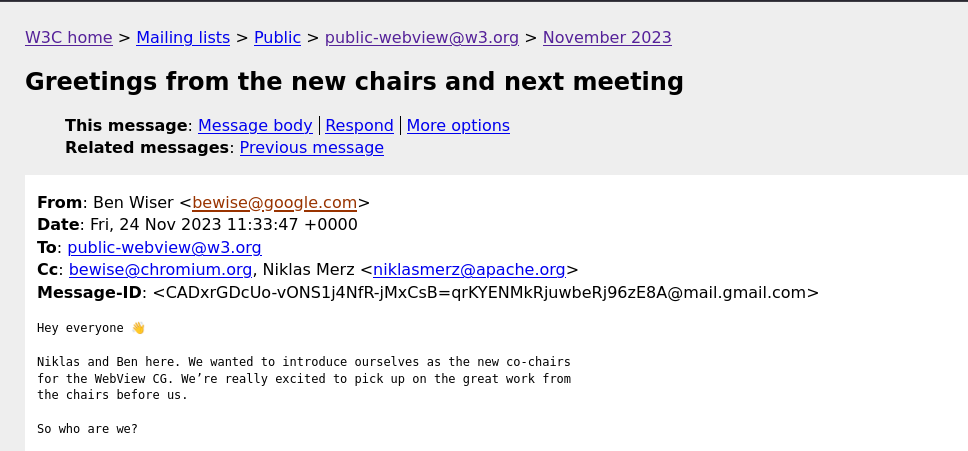

Leaving slide mode.
WebView Community Group Meeting
TPAC 2025
Kobe, Japan
hybrid meeting
10–14 November 2025
Agenda
Intros & admin (10 mins)
A.WebViews and Baseline
(45 mins)
B. Open Round
(45 mins)
- Recap sessions
- Notes about testing and Servo
- Charter review & Chairing
- New work streams?
Intros & Admin (15 mins)
-
Notes link:
bit.ly/webview-cg-tpac25
- Please add your your name to queue
- When speaking, please first announce your name and affiliation
Baseline on CanIWebView

New Basline status: WebView Available?
Webview supports all the same keys as the corresponding browser (sometimes not all keys are supported even if a feature
is WA/NA).
-> Supported?
Webview supports a subset of the keys supported by the corresponding browser.
-> Partial?
Webview supports none of the keys supported by the corresponding browser.
-> Unsupported?
Limited Availability with WebView Support
- Some features are Limited Availability overall
- But have sufficient support in Android Chrome+WebView and iOS Safari+WebView
"WebView Widely Available"?
- Desktop versions may not support the feature
- Firefox is the blocker for ~50 features at any given time
- How do we describe and categorize these?
Configurable features
- Some features can be enabled/disabled by app developers
- Examples: JavaScript, DOM storage, Geolocation etc...
- Impact on Baseline status?
Contributing back to web-features & BCD
- How confident are we with this data?
- How can we get this even more accurate?
- Who feeds data into BCD?
Break (10 min)

Recap sessions
- WebView quirks and testing
- Modular web engines
- Mini apps joint meeting
- Isolated Web Apps
- High Performance Web Apps
Goals
The WebView Community Group aims to identify, understand, and reduce the issues arising from the use of software
components (typically referred as `WebView`s) that are used to render Web technology-based content outside of a Web
browser (Native Apps, MiniApps, etc).
Scope of Work
The WebView Community Group will:
- identify the issues, challenges, and limitations that arise from the usage of WebViews, regardless of the platform
and type of device they're used on, including gathering support data to document interoperable surface of WebViews,
- determine whether they can be addressed through improvements to the Web Platform, WebView capabilities, the
surrounding ecosystem (e.g. documentation, testing frameworks), or through other mechanisms,
- develop technical proposals (explainers) targeting the agreed upon issues, challenges, and limitations that would
be implemented in a WebView,
- raise awareness about the impact of WebViews for Web technologies in relevant communities (e.g. existing W3C
groups)
Out of Scope
The following things are out of scope:
- Proposals that are not applicable to WebViews as defined in this charter (e.g. proposals on browser related
improvements),
- Normative specifications. Actual incubation of the explainers developed by the group is not in scope of this
charter.
Deliverables
Non-Normative Data
- Machine-readable data describing the differences between WebView & browser implementations that can be
consumed by
documentation platforms and other tools, by February 2025
Non-Normative Reports
-
WebView use cases and limitations: a document
describing the type of use WebViews fulfill and the challenges they create in distributing content and
applications built on top of Web technologies.
The group intends to continue updating the document with relevant usages and challenges.
-
Technical proposals: Explainers outlining solutions for the agreed upon challenges.
Chairing
Chair since Nov 2023

New Work Streams?
Thank you!
- More meetings
-
- WebDX CG next door
- Best day & time for next meeting?

Check out the notes document and help our scribe
Remote participants can hear us?
Intro why you care about WebViews
What do you want to take away from this session?